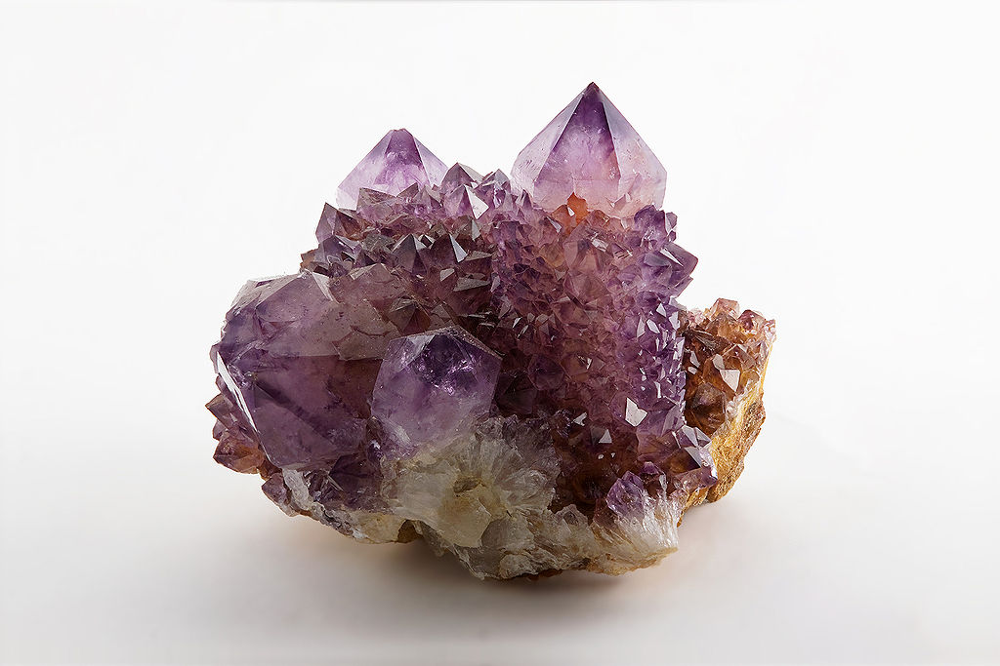

AMYTHYST

ABOUT:
Amethyst is a violet variety of quartz. The name comes from the Koine Greek ἀμέθυστος amethystos from ἀ- a-, "not" and μεθύσκω methysko / μεθύω methyo, "intoxicate", a reference to the belief that the stone protected its owner from drunkenness.[1] The ancient Greeks wore amethyst and carved drinking vessels from it in the belief that it would prevent intoxication.
Amethyst is a semiprecious stone often used in jewelry and is the traditional birthstone for February.